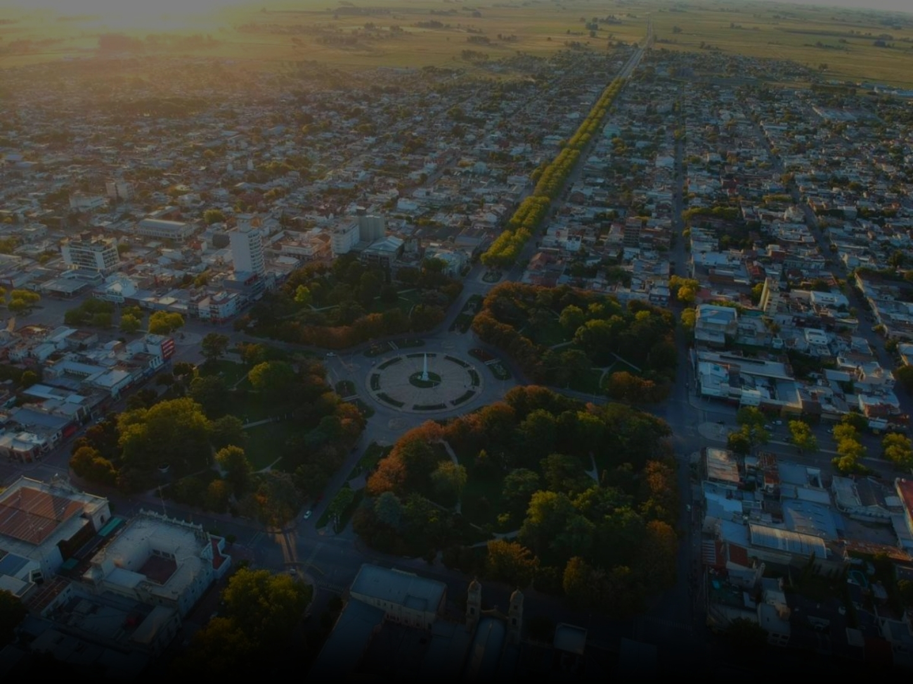
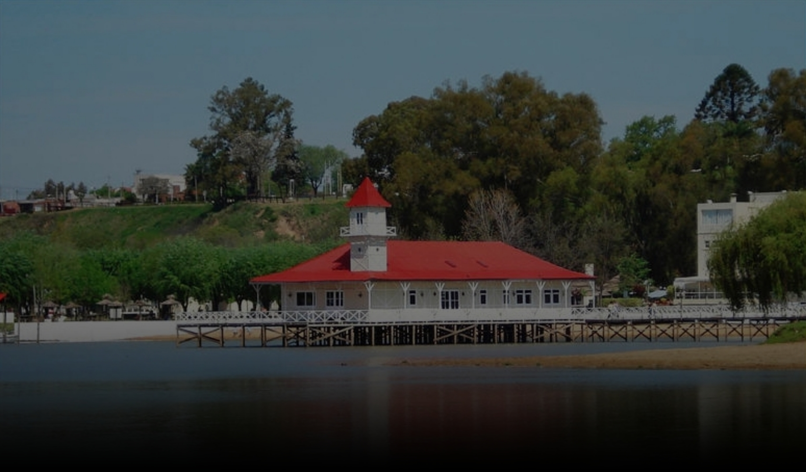
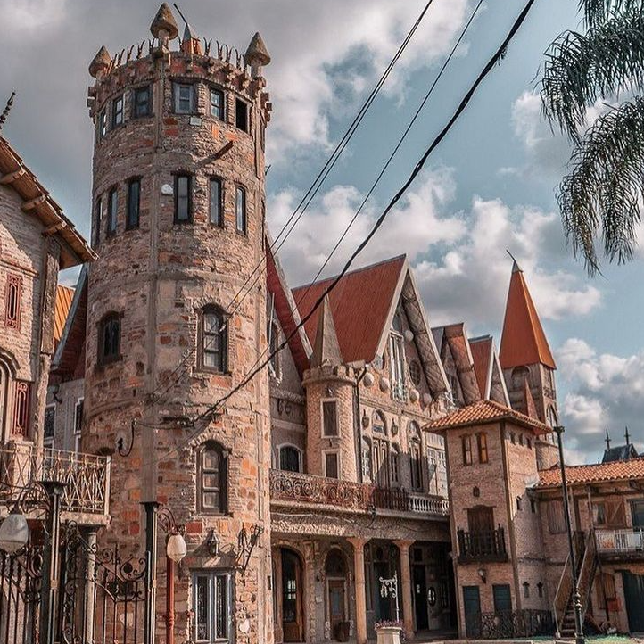
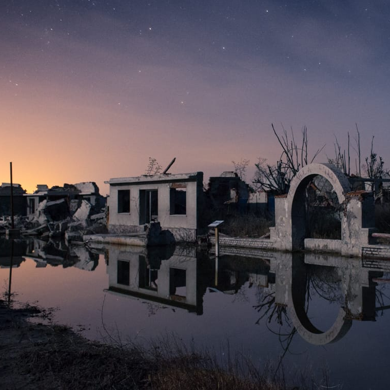
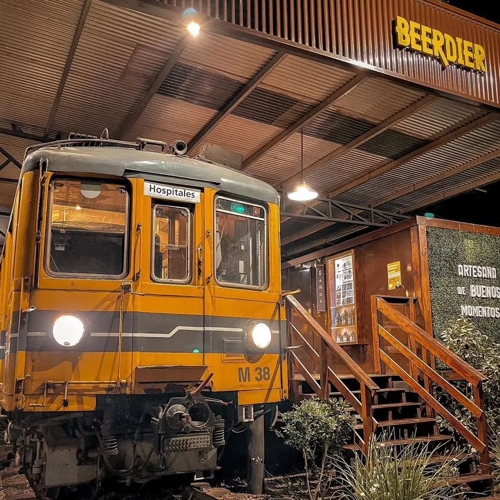
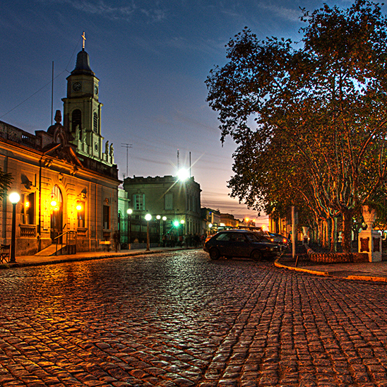
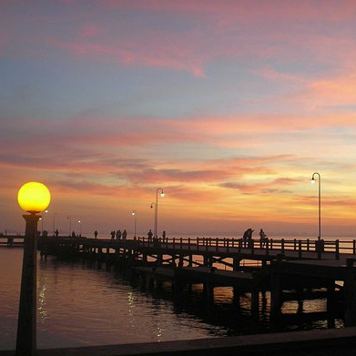
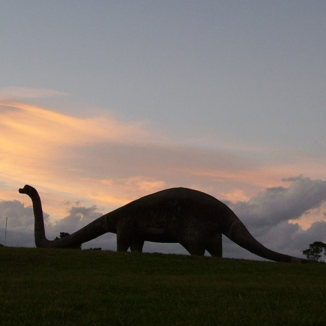

Conocé en nuestra página todas las alternativas de turismo en Buenos Aires, incluyendo hoteles, restaurantes y excursiones

Campanópolis
Es una aldea con espíritu medieval a solo 30 minutos del centro de Buenos Aires, fue construida por Antonio Campana en la década de los '80 y a lo largo de sus 200 hectáreas recrea distintos rincones de la antigua Europa, entre edificaciones de época , callejuelas adoquinadas y rios, bosques y lagunas.
Epecuén
Villa Epecuén, ubicado en el partido de Adolfo Alsina, provincia de Buenos Aires, es un pueblo que no sólo superó una tragedia, sino que también supo reinventarse a través de sus ruinas para volver a atraer al turismo. Esta antigua villa del sudoeste de la provincia de Buenos Aires resurgió del agua, después de haber permanecido inundada por casi 20 años.


Berdier
Berdier es un maravilloso pueblo escondido de la provincia de Buenos Aires a dos horas de la Zona Oeste del Conurbano: se encuentra a poco mas de 10 kilómetros de Salto, ciudad a la que pertenece, en la Provincia de Buenos Aires. Fue fundado el 15 de febrero de 1910 en terrenos cedidos por Hortencia y Corina Berdier y en sus años de esplendor llegó a tener una población de 2000 habitantes. Actualmente, atrae al turismo por su especial tranquilidad y lugares asombrosos.
Villarino
A 36 km de Bahía Blanca por RN 22, Villarino es un pueblo chico, tranquilo, apacible y muy agradable. sin duda, con bellos paisajes y hermosas postales para descubrir y fotografiarse. Pero, sobre todo, ofrece a los viajeros un amplio abanico de actividades que atraen y entretienen a todos los públicos.


Tapalqué
En el centro de la provincia de Buenos Aires se alza Tapalqué, donde la paz, el aire puro y la calidez de la gente se conjugan a la vera del arroyo homónimo, entre bañados, totoras y los verdes de la llanura. Buscado por aquellos que desean un descanso en contacto con lo natural todo lo que el partido tiene para ofrecer.
San Antonio de Areco
San Antonio de Areco se encuentra a 113 km de la provincia de Buenos Aire y es conocida como "cuna de la tradición", debido a que conserva todos los atributos de un tradicional pueblo de la llanura pampeana. La comunidad es muy celosa en el cuidado y difusión de sus “usos y costumbres” tradicionales/criollos. Esa cuestión que caracteriza al arequero más allá de su condición social, raza o religión.


Chascomús
Chascomús, Ubicada a 123 km al sur del centro de la ciudad de Buenos Aires, es una ciudad colmada de cultura y tradición fue creciendo a orillas de su laguna, la más grande del sistema de Encadenadas. Con variados atractivos tanto históricos como naturales, el movimiento turístico de este destino se encuentra íntimamente ligado a la actividad lacustre.
Balcarce
Balcarce, se encuentra situada en el sudeste de la Provincia de Buenos Aires, a 360 kilómetros de la Ciudad. Este destino propone la conexión perfecta entre las elevaciones más antiguas del mundo, el paisaje de las llanuras pampeanas, serranías verdes y valles productivos combinados con la paradisíaca laguna. Respirar el aire de las sierras ante un tejido natural de colores y formas es ideal para relajarse por un fin de semana


San Pedro
San pedro se encuentra a 164 km de Buenos Aires. Es elegida por gran cantidad de turistas para mini escapadas o viajes cortos debido a sus fiestas populares muy conocidas como el Festival de Música Country, en septiembre, que duplica su población durante ese fin de semana, y la Fiesta de la Ensaimada, en agosto, que tuvo 15.000 visitantes en la edición de 2016.

Ante cualquier duda, consulta, o crítica recontructiva que tengas para hacernos, contactanos y te responderemos a la brevedad al correo electrónico que indiques a continuación!